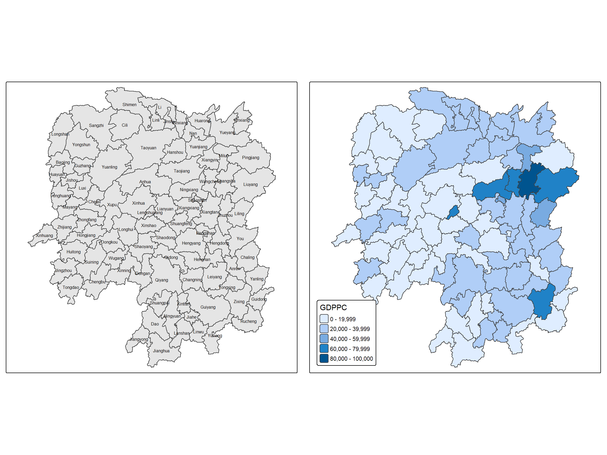
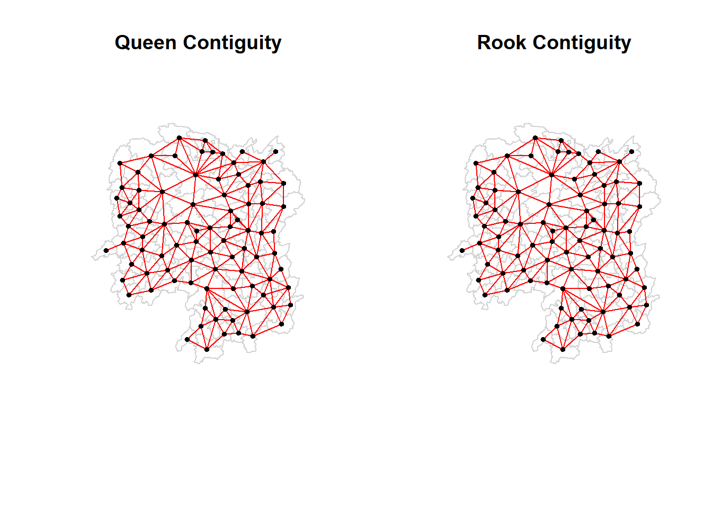

pacman::p_load(sf, spdep, tmap, tidyverse, knitr)Hands-on Exercise 4: Spatial Weights and Applications
1 Overview
This exercise covers computing spatial weights in R and using them to derive spatially lagged variables.
A spatial weights matrix is the rule that decides which areal units count as neighbours of which, and how much weight each neighbour carries. Every measure of spatial autocorrelation is calculated from that rule, so changing it can change the result: a pattern that appears clustered under one definition of neighbourhood may not under another. The choice is part of the analysis rather than a step that precedes it.
The following will be covered during the exercise:
- importing geospatial data with sf package,
- importing an aspatial csv file with readr package,
- performing a relational join with dplyr package,
- computing contiguity-based, distance-based, and inverse-distance spatial weights with spdep package, and
- deriving spatially lagged variables with spdep package.
2 The Study Area and Data
Two data sets are used:
| Data set | Format | Description |
|---|---|---|
| Hunan | ESRI shapefile | County boundary layer for Hunan province |
| Hunan_2012.csv | csv | Selected local development indicators for Hunan’s counties in 2012 |
2.1 Getting Started
The code chunk below loads the packages required for this exercise:
3 Getting the Data into R
3.1 Importing the shapefile
The county boundary layer is imported with st_read() of sf:
hunan <- st_read(dsn = "data/geospatial",
layer = "Hunan")Reading layer `Hunan' from data source
`C:\yxlinn\ISSS626-GAA\Hands-on_Ex\Hands-on_Ex04\data\geospatial'
using driver `ESRI Shapefile'
Simple feature collection with 88 features and 7 fields
Geometry type: POLYGON
Dimension: XY
Bounding box: xmin: 108.7831 ymin: 24.6342 xmax: 114.2544 ymax: 30.12812
Geodetic CRS: WGS 84class(hunan)[1] "sf" "data.frame"3.2 Importing the csv file
The 2012 development indicators are imported with read_csv() of readr:
hunan2012 <- read_csv("data/aspatial/Hunan_2012.csv")class(hunan2012)[1] "spec_tbl_df" "tbl_df" "tbl" "data.frame" The file contains 88 rows and 29 columns.
3.3 Performing relational join
Before joining, the columns available in each source are inspected:
colnames(hunan)[1] "NAME_2" "ID_3" "NAME_3" "ENGTYPE_3" "Shape_Leng"
[6] "Shape_Area" "County" "geometry" colnames(hunan2012) [1] "County" "City" "avg_wage" "deposite" "FAI"
[6] "Gov_Rev" "Gov_Exp" "GDP" "GDPPC" "GIO"
[11] "Loan" "NIPCR" "Bed" "Emp" "EmpR"
[16] "EmpRT" "Pri_Stu" "Sec_Stu" "Household" "Household_R"
[21] "NOIP" "Pop_R" "RSCG" "Pop_T" "Agri"
[26] "Service" "Disp_Inc" "RORP" "ROREmp" The join is performed with left_join() of dplyr, matched on County:
hunan_joined <- left_join(hunan, hunan2012, by = "County")
colnames(hunan_joined) [1] "NAME_2" "ID_3" "NAME_3" "ENGTYPE_3" "Shape_Leng"
[6] "Shape_Area" "County" "City" "avg_wage" "deposite"
[11] "FAI" "Gov_Rev" "Gov_Exp" "GDP" "GDPPC"
[16] "GIO" "Loan" "NIPCR" "Bed" "Emp"
[21] "EmpR" "EmpRT" "Pri_Stu" "Sec_Stu" "Household"
[26] "Household_R" "NOIP" "Pop_R" "RSCG" "Pop_T"
[31] "Agri" "Service" "Disp_Inc" "RORP" "ROREmp"
[36] "geometry" hunan <- hunan_joined %>%
select(NAME_2, ID_3, NAME_3, ENGTYPE_3, County, GDPPC)
Note
Named columns are used here instead of position. select(1:4, 7, 15) produces the same result for these particular files, but it depends on the exact column order of both hunan and hunan2012 remaining unchanged. If either source were reordered or extended, the same code would silently select a different column with no error, so naming the columns removes that dependency.
4 Visualising Regional Development Indicator
A basemap with county labels and a choropleth of GDPPC are prepared with tmap.
basemap <- tm_shape(hunan) +
tm_polygons(fill = "grey90") +
tm_text("NAME_3", size=0.5)
gdppc <- qtm(hunan, "GDPPC") +
tm_layout(
legend.position = c("left", "bottom"))
tmap_arrange(basemap, gdppc, asp=1, ncol=2)
Note
Analysis:
Counties are shaded from light blue to dark blue according to GDP per capita, with darker shades indicating higher values. The resulting pattern shows where economic activity is concentrated across Hunan’s counties.
Most of the province sits in the lowest bracket. The dominant shade is the lightest blue (0–=19,999), indicating that the bulk of Hunan’s counties cluster at the low end of the GDPPC range. Wealth is concentrated rather than evenly spread.
The darker cluster (60,000–79,999 and 80,000-100,000) sits in the northeast, and it is a tight group of adjacent counties rather than a single outlier. Changsha has the highest GDPPC in the Hunan province.
- One hotspot: Changsha, Wangcheng, Liuyang, Ningxiang
- Two separate outliers: Zixing and Lengshuijiang
5 Computing Contiguity Spatial Weights
poly2nb() of spdep package can be used to compute contiguity weight matrices for the study area. This function builds a neighbours list based on regions with contiguous boundaries. The queen argument controls what counts as sharing a boundary: under Queen contiguity a single shared vertex is sufficient, whereas Rook contiguity requires a shared edge. The argument defaults to TRUE, so calling the function without specifying queen returns Queen contiguity neighbours.
5.1 Computing QUEEN contiguity
wm_q <- poly2nb(hunan, queen = TRUE)
summary(wm_q)Neighbour list object:
Number of regions: 88
Number of nonzero links: 448
Percentage nonzero weights: 5.785124
Average number of links: 5.090909
Link number distribution:
1 2 3 4 5 6 7 8 9 11
2 2 12 16 24 14 11 4 2 1
2 least connected regions:
30 65 with 1 link
1 most connected region:
85 with 11 linkshunan$County[c(30, 65, 85)][1] "Xinhuang" "Linxiang" "Taoyuan"
Note
Interpretation:
All 88 counties have at least one neighbour, so no county is spatially isolated under the Queen criterion. The number of non-zero links is 448, with an average of 5.09 links per county. The link distribution is concentrated in the middle of its range, with most counties having between three and seven neighbours.
Taoyuan is the most connected county with 11 neighbours, while Xinhuang and Linxiang have the least connected counties, each with a single neighbour.
The neighbours of Taoyuan can be examined using the code below:
wm_q[[85]] [1] 1 2 3 5 6 32 56 57 69 75 78The corresponding county names:
hunan$NAME_3[wm_q[[85]]] [1] "Anxiang" "Hanshou" "Jinshi" "Linli" "Shimen" "Yuanling"
[7] "Anhua" "Nan" "Cili" "Sangzhi" "Taojiang"
Note
The neighbour identifiers are row positions in hunan, not county codes, so they need to be resolved against the data frame before being interpreted.
The GDPPC of the above 11 neighbouring counties:
nb85 <- hunan$GDPPC[wm_q[[85]]]
nb85 [1] 23667 20981 34592 25554 27137 24194 14567 21311 18714 14624 19509The structure of the full neighbours list can be inspected with str().
str(wm_q)List of 88
$ : int [1:5] 2 3 4 57 85
$ : int [1:5] 1 57 58 78 85
$ : int [1:4] 1 4 5 85
$ : int [1:4] 1 3 5 6
$ : int [1:4] 3 4 6 85
$ : int [1:5] 4 5 69 75 85
$ : int [1:4] 67 71 74 84
$ : int [1:7] 9 46 47 56 78 80 86
$ : int [1:6] 8 66 68 78 84 86
$ : int [1:8] 16 17 19 20 22 70 72 73
$ : int [1:3] 14 17 72
$ : int [1:5] 13 60 61 63 83
$ : int [1:4] 12 15 60 83
$ : int [1:3] 11 15 17
$ : int [1:4] 13 14 17 83
$ : int [1:5] 10 17 22 72 83
$ : int [1:7] 10 11 14 15 16 72 83
$ : int [1:5] 20 22 23 77 83
$ : int [1:6] 10 20 21 73 74 86
$ : int [1:7] 10 18 19 21 22 23 82
$ : int [1:5] 19 20 35 82 86
$ : int [1:5] 10 16 18 20 83
$ : int [1:7] 18 20 38 41 77 79 82
$ : int [1:5] 25 28 31 32 54
$ : int [1:5] 24 28 31 33 81
$ : int [1:4] 27 33 42 81
$ : int [1:3] 26 29 42
$ : int [1:5] 24 25 33 49 54
$ : int [1:3] 27 37 42
$ : int 33
$ : int [1:8] 24 25 32 36 39 40 56 81
$ : int [1:8] 24 31 50 54 55 56 75 85
$ : int [1:5] 25 26 28 30 81
$ : int [1:3] 36 45 80
$ : int [1:6] 21 41 47 80 82 86
$ : int [1:6] 31 34 40 45 56 80
$ : int [1:4] 29 42 43 44
$ : int [1:4] 23 44 77 79
$ : int [1:5] 31 40 42 43 81
$ : int [1:6] 31 36 39 43 45 79
$ : int [1:6] 23 35 45 79 80 82
$ : int [1:7] 26 27 29 37 39 43 81
$ : int [1:6] 37 39 40 42 44 79
$ : int [1:4] 37 38 43 79
$ : int [1:6] 34 36 40 41 79 80
$ : int [1:3] 8 47 86
$ : int [1:5] 8 35 46 80 86
$ : int [1:5] 50 51 52 53 55
$ : int [1:4] 28 51 52 54
$ : int [1:5] 32 48 52 54 55
$ : int [1:3] 48 49 52
$ : int [1:5] 48 49 50 51 54
$ : int [1:3] 48 55 75
$ : int [1:6] 24 28 32 49 50 52
$ : int [1:5] 32 48 50 53 75
$ : int [1:7] 8 31 32 36 78 80 85
$ : int [1:6] 1 2 58 64 76 85
$ : int [1:5] 2 57 68 76 78
$ : int [1:4] 60 61 87 88
$ : int [1:4] 12 13 59 61
$ : int [1:7] 12 59 60 62 63 77 87
$ : int [1:3] 61 77 87
$ : int [1:4] 12 61 77 83
$ : int [1:2] 57 76
$ : int 76
$ : int [1:5] 9 67 68 76 84
$ : int [1:4] 7 66 76 84
$ : int [1:5] 9 58 66 76 78
$ : int [1:3] 6 75 85
$ : int [1:3] 10 72 73
$ : int [1:3] 7 73 74
$ : int [1:5] 10 11 16 17 70
$ : int [1:5] 10 19 70 71 74
$ : int [1:6] 7 19 71 73 84 86
$ : int [1:6] 6 32 53 55 69 85
$ : int [1:7] 57 58 64 65 66 67 68
$ : int [1:7] 18 23 38 61 62 63 83
$ : int [1:7] 2 8 9 56 58 68 85
$ : int [1:7] 23 38 40 41 43 44 45
$ : int [1:8] 8 34 35 36 41 45 47 56
$ : int [1:6] 25 26 31 33 39 42
$ : int [1:5] 20 21 23 35 41
$ : int [1:9] 12 13 15 16 17 18 22 63 77
$ : int [1:6] 7 9 66 67 74 86
$ : int [1:11] 1 2 3 5 6 32 56 57 69 75 ...
$ : int [1:9] 8 9 19 21 35 46 47 74 84
$ : int [1:4] 59 61 62 88
$ : int [1:2] 59 87
- attr(*, "class")= chr "nb"
- attr(*, "region.id")= chr [1:88] "1" "2" "3" "4" ...
- attr(*, "call")= language poly2nb(pl = hunan, queen = TRUE)
- attr(*, "type")= chr "queen"
- attr(*, "snap")= num 9e-08
- attr(*, "sym")= logi TRUE
- attr(*, "ncomp")=List of 2
..$ nc : int 1
..$ comp.id: int [1:88] 1 1 1 1 1 1 1 1 1 1 ...5.2 Computing ROOK contiguity
wm_r <- poly2nb(hunan, queen = FALSE)
summary(wm_r)Neighbour list object:
Number of regions: 88
Number of nonzero links: 440
Percentage nonzero weights: 5.681818
Average number of links: 5
Link number distribution:
1 2 3 4 5 6 7 8 9 10
2 2 12 20 21 14 11 3 2 1
2 least connected regions:
30 65 with 1 link
1 most connected region:
85 with 10 linkshunan$County[c(30, 65, 85)][1] "Xinhuang" "Linxiang" "Taoyuan" hunan$NAME_3[wm_r[[85]]] [1] "Anxiang" "Hanshou" "Jinshi" "Linli" "Shimen" "Yuanling"
[7] "Anhua" "Cili" "Sangzhi" "Taojiang"Nan is excluded from Taoyuan’s neighbours under Rook contiguity.
Note
Interpretation:
All 88 counties have at least one neighbour under Rook contiguity, so no county becomes isolated when point-only contacts are excluded. The number of non-zero links is 440, with an average of 5.0 links per county. The link distribution is concentrated in the middle of its range, with most counties having between three and seven neighbours.
Taoyuan is the most connected county with 10 neighbours, while Xinhuang and Linxiang have the least connected counties, each with a single neighbour.
5.3 Comparing Queen and Rook contiguity
Rook contiguity produces fewer links than Queen, with an average of 5.0 links per county compared to 5.09 under Queen. This is expected, since every Rook neighbour is also a Queen neighbour, a shared edge always implies at least a shared vertex, but the reverse does not hold.
The county-level neighbour lists make this concrete: Taoyuan has 11 neighbours under Queen and 10 under Rook, losing exactly one, Nan. Checking the shared geometry between the two counties confirms the contact is a single point rather than an edge, so it satisfies Queen contiguity but not Rook’s stricter requirement, exactly the case the two criteria are meant to distinguish. Xinhuang and Linxiang remain least connected under both criteria, showing that their isolation reflects their position on the map rather than an artefact of which contiguity rule is applied.
5.4 Visualising contiguity weights
A connectivity graph draws a line between points, not between whole polygon shapes, so each polygon first needs a single point to represent it. A centroid, the geometric centre of a shape, serves this purpose. Simply calling st_centroid() on the geometry column would return sf point objects, but the connectivity graph’s plotting function needs plain coordinate values in a two-column table instead, so an extra step is needed to get from one format to the other.
To do this, a mapping function is used: map_dbl() from purrr. A mapping function takes a function and applies it separately to every item in a list, then collects all the results together into one vector. Here, the list being worked through is hunan’s geometry column, which holds one polygon shape per county, and the function applied to each shape is st_centroid().
Longitude is extracted first:
longitude <- map_dbl(hunan$geometry, ~st_centroid(.x)[[1]])
Note
.x stands for whichever polygon is currently being processed as map_dbl() works through the geometry column one element at a time. st_centroid(.x) computes that polygon’s centroid, and [[1]] retrieves the first coordinate value, longitude, from the result.
Latitude is obtained the same way, differing only in which coordinate is retrieved:
latitude <- map_dbl(hunan$geometry, ~st_centroid(.x)[[2]])
Note
[[2]] retrieves the second coordinate value, latitude, from each centroid.
The two vectors are then combined into a single object with cbind():
coords <- cbind(longitude, latitude)The first few rows are checked to confirm the result is formatted correctly:
head(coords) longitude latitude
[1,] 112.1531 29.44362
[2,] 112.0372 28.86489
[3,] 111.8917 29.47107
[4,] 111.7031 29.74499
[5,] 111.6138 29.49258
[6,] 111.0341 29.798635.5 Plotting Queen and Rook Contiguity Maps
Queen and Rook contiguity are plotted side by side:
par(mfrow = c(1, 2))
plot(hunan$geometry, border = "lightgrey", main = "Queen Contiguity")
plot(wm_q, coords, pch = 19, cex = 0.6, add = TRUE, col = "red")
plot(hunan$geometry, border = "lightgrey", main = "Rook Contiguity")
plot(wm_r, coords, pch = 19, cex = 0.6, add = TRUE, col = "red")
The two graphs are visually near-identical, consistent with the small difference in link counts reported above.
6 Computing Distance-based Neighbours
dnearneigh() of spdep identifies neighbouring region points based on their Euclidean distance, controlled by two separate arguments: a lower bound (d1) and an upper bound (d2).
If the coordinates are not projected (i.e., in latitude and longitude), whether provided as a spatial coordinates object or as a plain two-column matrix, with longlat = TRUE, the function will calculate great circle distances in kilometres, assuming the WGS84 reference ellipsoid.
6.1 Determining the cut-off distance
Firstly, the upper limit for distance band needs to be determined. This can be done through the following steps:
- Return a matrix with the indices of points belonging to the set of the k nearest neighbours of each other by using knearneigh() of spdep.
- Convert the knn object returned by
knearneigh()into a neighbours list of class nb with a list of integer vectors containing neighbour region number ids by using knn2nb(). - Return the length of neighbour relationship edges by using nbdists() of spdep. If the coordinates are projected, the function returns distances in the units of the coordinates; otherwise, in km.
- Remove the list structure of the returned object by using unlist().
k1 <- knn2nb(knearneigh(coords))
k1dists <- unlist(nbdists(k1, coords, longlat = TRUE))
summary(k1dists) Min. 1st Qu. Median Mean 3rd Qu. Max.
24.79 32.57 38.01 39.07 44.52 61.79
Note
The above output shows that the maximum first-neighbour distance is 61.79km. Using this value as the upper threshold gives certainty that all units will have at least one neighbour.